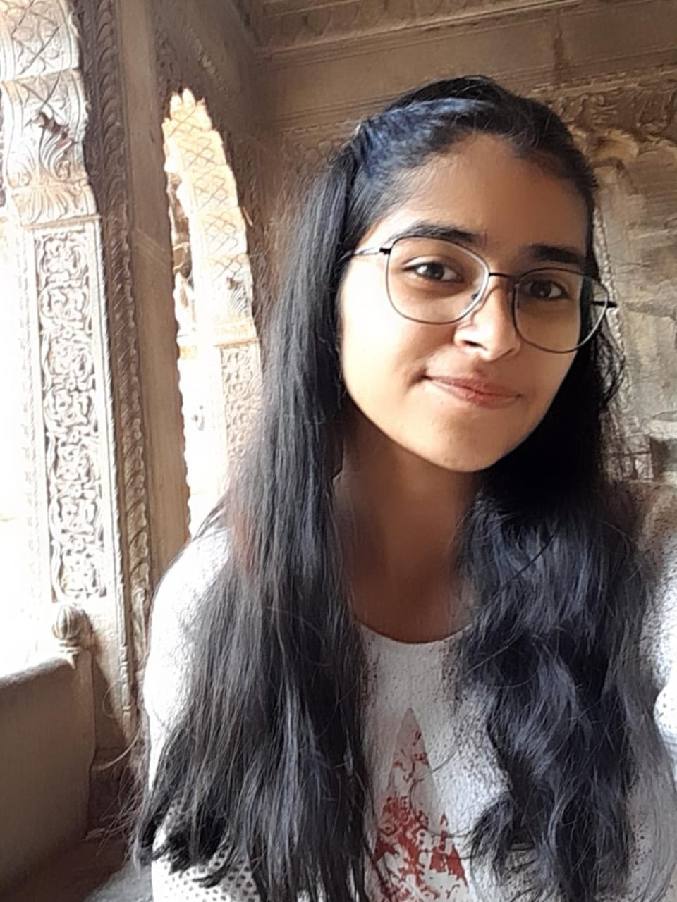
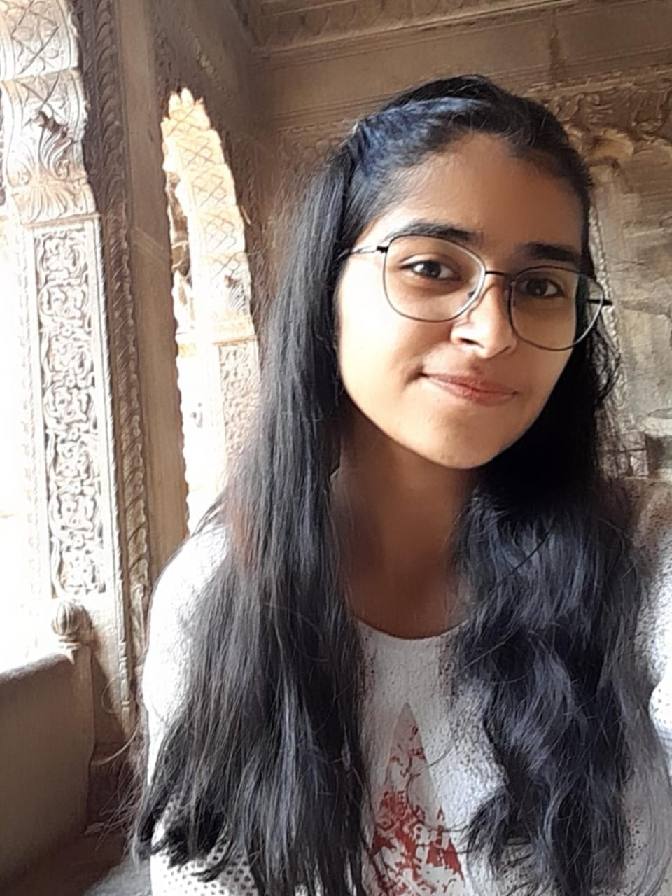

Bit About Me
I’m someone who observes quietly, thinks deeply, and cares about how spaces affect people. My interest in architecture didn’t come from a love for buildings, but from a need to understand how space, nature, and human behavior connect. I’ve always been drawn to the emotion behind design — how spaces shape behavior, mood, and daily rituals. My love for architecture comes from its ability to become one with nature, to respond to context, and to reflect the lives of the people it shelters.
I believe in architecture that listens — to the land, to culture, and to the rhythms of life. With every sketch and every model, I strive to create spaces that feel honest, rooted, and alive. With a strong sense of responsibility and a willingness to learn, I bring focus, clarity, and commitment to every project I engage with.